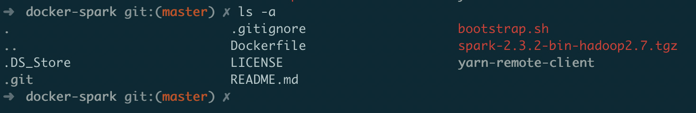
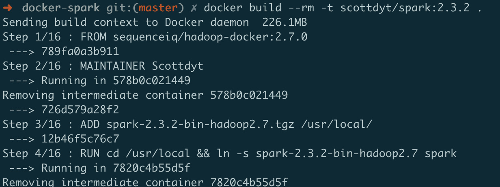
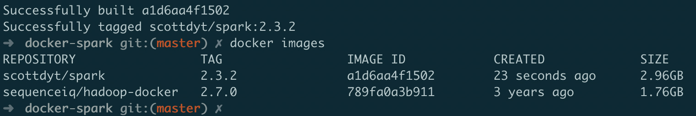
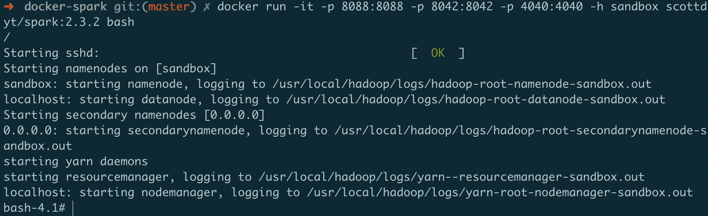
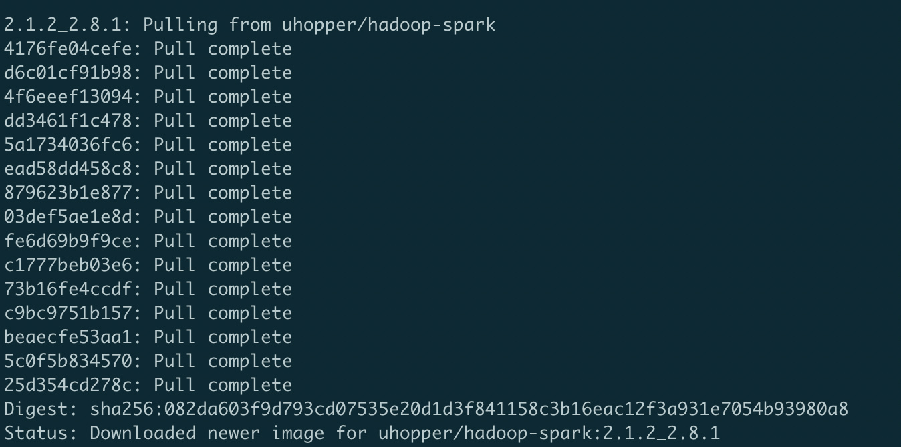

+++ title = "使用 Docker 配置 hadoop/spark" slug = "docker1" tags = ["distributed system","project"] date = "2018-11-03T13:12:38+08:00" description = ""
+++
分别安装hadoop和spark镜像
安装hadoop镜像
选择的docker镜像地址，这个镜像提供的hadoop版本比较新，且安装的是jdk8，可以支持安装最新版本的spark。
docker pull uhopper/hadoop:2.8.1
安装spark镜像
如果对spark版本要求不是很高，可以直接拉取别人的镜像，若要求新版本，则需要对dockerfile进行配置。
环境准备
下载sequenceiq/spark镜像构建源码
git clone https://github.com/sequenceiq/docker-spark从Spark官网下载Spark 2.3.2安装包
将下载的文件需要放到docker-spark目录下
查看本地image，确保已经安装了hadoop
进入docker-spark目录，确认所有用于镜像构建的文件已经准备好
- 
修改配置文件
- 修改Dockerfile为以下内容
FROM sequenceiq/hadoop-docker:2.7.0
MAINTAINER scottdyt
#support for Hadoop 2.7.0
#RUN curl -s http://d3kbcqa49mib13.cloudfront.net/spark-1.6.1-bin-hadoop2.6.tgz | tar -xz -C /usr/local/
ADD spark-2.3.2-bin-hadoop2.7.tgz /usr/local/
RUN cd /usr/local && ln -s spark-2.3.2-bin-hadoop2.7 spark
ENV SPARK_HOME /usr/local/spark
RUN mkdir {% math_inline %}SPARK_HOME/yarn-remote-client
ADD yarn-remote-client {% endmath_inline %}SPARK_HOME/yarn-remote-client
RUN {% math_inline %}BOOTSTRAP && {% endmath_inline %}HADOOP_PREFIX/bin/hadoop dfsadmin -safemode leave && {% math_inline %}HADOOP_PREFIX/bin/hdfs dfs -put {% endmath_inline %}SPARK_HOME-2.3.2-bin-hadoop2.7/jars /spark && {% math_inline %}HADOOP_PREFIX/bin/hdfs dfs -put {% endmath_inline %}SPARK_HOME-2.3.2-bin-hadoop2.7/examples/jars /spark
ENV YARN_CONF_DIR {% math_inline %}HADOOP_PREFIX/etc/hadoop
ENV PATH {% endmath_inline %}PATH:{% math_inline %}SPARK_HOME/bin:{% endmath_inline %}HADOOP_PREFIX/bin
# update boot script
COPY bootstrap.sh /etc/bootstrap.sh
RUN chown root.root /etc/bootstrap.sh
RUN chmod 700 /etc/bootstrap.sh
#install R
RUN rpm -ivh http://dl.fedoraproject.org/pub/epel/6/x86_64/epel-release-6-8.noarch.rpm
RUN yum -y install R
ENTRYPOINT ["/etc/bootstrap.sh"]
- 修改bootstrap.sh为以下内容
#!/bin/bash
: {% math_inline %}{HADOOP_PREFIX:=/usr/local/hadoop}
{% endmath_inline %}HADOOP_PREFIX/etc/hadoop/hadoop-env.sh
rm /tmp/*.pid
# installing libraries if any - (resource urls added comma separated to the ACP system variable)
cd {% math_inline %}HADOOP_PREFIX/share/hadoop/common ; for cp in {% endmath_inline %}{ACP//,/ }; do echo == {% math_inline %}cp; curl -LO {% endmath_inline %}cp ; done; cd -
# altering the core-site configuration
sed s/HOSTNAME/{% math_inline %}HOSTNAME/ /usr/local/hadoop/etc/hadoop/core-site.xml.template > /usr/local/hadoop/etc/hadoop/core-site.xml
# setting spark defaults
echo spark.yarn.jar hdfs:///spark/* > {% endmath_inline %}SPARK_HOME/conf/spark-defaults.conf
cp {% math_inline %}SPARK_HOME/conf/metrics.properties.template {% endmath_inline %}SPARK_HOME/conf/metrics.properties
service sshd start
{% math_inline %}HADOOP_PREFIX/sbin/start-dfs.sh
{% endmath_inline %}HADOOP_PREFIX/sbin/start-yarn.sh
CMD={% math_inline %}{1:-"exit 0"}
if [[ "{% endmath_inline %}CMD" == "-d" ]];
then
service sshd stop
/usr/sbin/sshd -D -d
else
/bin/bash -c "$*"
fi
构建镜像
docker build --rm -t scottdyt/spark:2.3.2 .

查看镜像

启动一个spark2.3.1容器
docker run -it -p 8088:8088 -p 8042:8042 -p 4040:4040 -h sandbox scottdyt/spark:2.3.2 bash
启动成功：

安装spark-hadoop镜像
如果想偷懒一点，直接安装装好spark和hadoop的镜像，镜像地址在这里。
或者直接在终端输入：
docker pull uhopper/hadoop-spark:2.1.2_2.8.1
安装完成：
